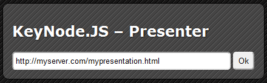
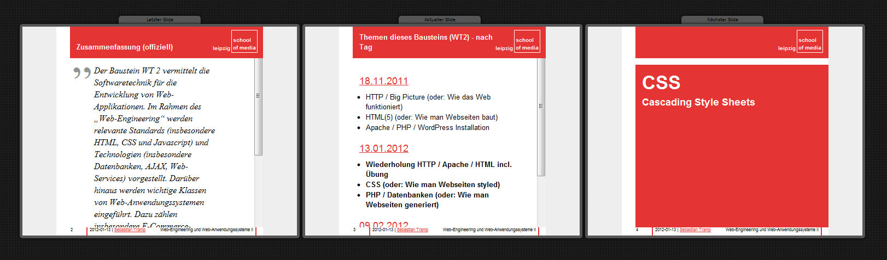
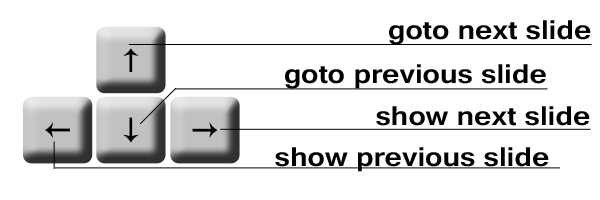

KeyNode.JS
-
How it Works
KeyNode.JS - How it Works
The parts of this presentation:
General
- KeyNode.Js gives you the chance to synchronise your presentations and add to deck.js the things every presenter should have.
- It is written in Javascript and works with every Deck.js presentation.
How to get started?
What do you need?
- A running deck.js presentation
- the watcher.js downloaded or linked from Github:
https://rawgithub.com/AKSW/KeyNode.js/master/watcher/keynode.watch.js - the presenter folder downloaded from Github:
https://github.com/AKSW/KeyNode.js/tree/master/presenter - A NodeServer running local or online
also located at https://github.com/AKSW/KeyNode.js
Changes at your deck.js presentation
- Paste the link to the keynode.watcher.js into the head of your presentation before the deck was initialiated
example:<script src="../watcher/keynode.watch.js"></script>
- add an canonical URL to your head in the following form:
<link rel="http://ns.aksw.org/keynode/canonical" href="[your canonical url e.g. http://myserver.com/mypresentation.html]" />
- add an NodeServer-URL to your head in the following form:
<link rel="http://ns.aksw.org/keynode/server" href="[e.g.http://localhost:4123]" />
- add your email address to your head in the following form:
<link rel="http://ns.aksw.org/keynode/mailto" href="[e.g.mailto:ich@meinserver.net]" />
How to start the presenter? (1)
- go to the presenter-folder and open the index.html with your browser (it works best with Google Chrome)
- paste your canonical URL into the textfield
- hit [Enter] or hit [Ok]
How to start the presenter? (2)

- if the presenter gets the content form the canonical URL, it fills the values found there otherwise you have to do the following steps
- [optional] add an alternate URL to your presenter, this one will used by the Presenter, if set
- [optional] add another NodeServer and hit [Ok] button next to it
- add the password for each NodeServer (if you know it) and hit [Test Inputs]
- [optional] hit [Reset] at the NodeServer you have forget the password from, then it will be send to your emailaddress or will shown in the console of your local server, if you have one
- When ready hit [start Presenter] and begin to present
How to start the presenter? (3)
Now you are on the presenter console and can begin to have your talk.  On the next Slide: How to use the presenterHow do i use the presenter? (1)
What is shown in each part of the presenter?- On the left side: your last presentation slide
- In the middle: the slide everyone listen to your presentation sees
- On the right side: your next presentation slide
How do I use the presenter? (2)
With the arrow keys you can control your presentation, any change will be broadcasted to every slide opened with the keynode.watcher.js included. How do I use the server? (1)
- Check if you have installed the following programs:
- node.js(download) - npm (for easy nodepackage installation) - socket.io (extention of node.js) - nodemailer (extention of node.js: if you want to run a public server) - request (extention of node.js: if you want to run a public server)
- Rename or Copy: keynode.js.server_settings.js_sample to keynode.js.server_settings.js
- Check the configuration if it fits to your requirements (How to Configurate)
How to actualy start the server
go to the folder and run the server:$ cd ./server $ node keynode.js.server.js
How do I configure the server? (1)
in the Config file you find the following settings:-
Did you want to see the password in the console if you reset it or send an email?
Default:this.localInstallation = false;
-
How do your consolelogging looks like
Default:this.preTagInfo = '\x1B[32m\x1B[1m[Info]\x1B[0m'; this.preTagSettings = '\x1B[32m\x1B[1m[Settings]\x1B[0m'; this.preTagServerData = '\x1B[32m\x1B[1m[Server_data]\x1B[0m'; this.preTagServer = '\x1B[32m\x1B[1m[Server]\x1B[0m'; this.preTagPres = '\x1B[32m\x1B[1m[Presentation]\x1B[0m';
-
What is your default password set when you reset it?
Default:this.standardPassword = (Math.floor(Math.random() * 4257671236709));
uncomment the following line and comment the other, when only you use the serverthis.standardPassword = 'rootKannAlles';
-
On what port should the server listen?
Default:this.Server_Port = 4123;
-
Do you want to allow new presentations or dont you?
Default:this.allow_new_presentations = true;
How do I configure the server? (2)
in the Config file you find the following settings:-
Do you want to see all debug information on the console screen?
Default:
this.debug = true;
-
Do you want to use the MailerOptions? (only in nonlocalInstallation)
Default:this.useMail = false;
they require 2 addons for node.js (only change if they are somewhere else):this.NodeMailerPackage = "nodemailer"; this.RequestPackage = "request";
-
Mail configuration:
you can find an great number of possible options at documentation of Nodemailer
Default:this.mailProto = "SMTP"; this.smtp_options = { host: "domain.de", secureConnection: true, port: 465, auth: { user: "user@Domain.de", pass: "" } };another option is the commented sendmail config:this.mailProto = "Sendmail"; this.smtp_options = "/usr/bin/sendmail";
How does it work?
the easyest way to show is the following chart: